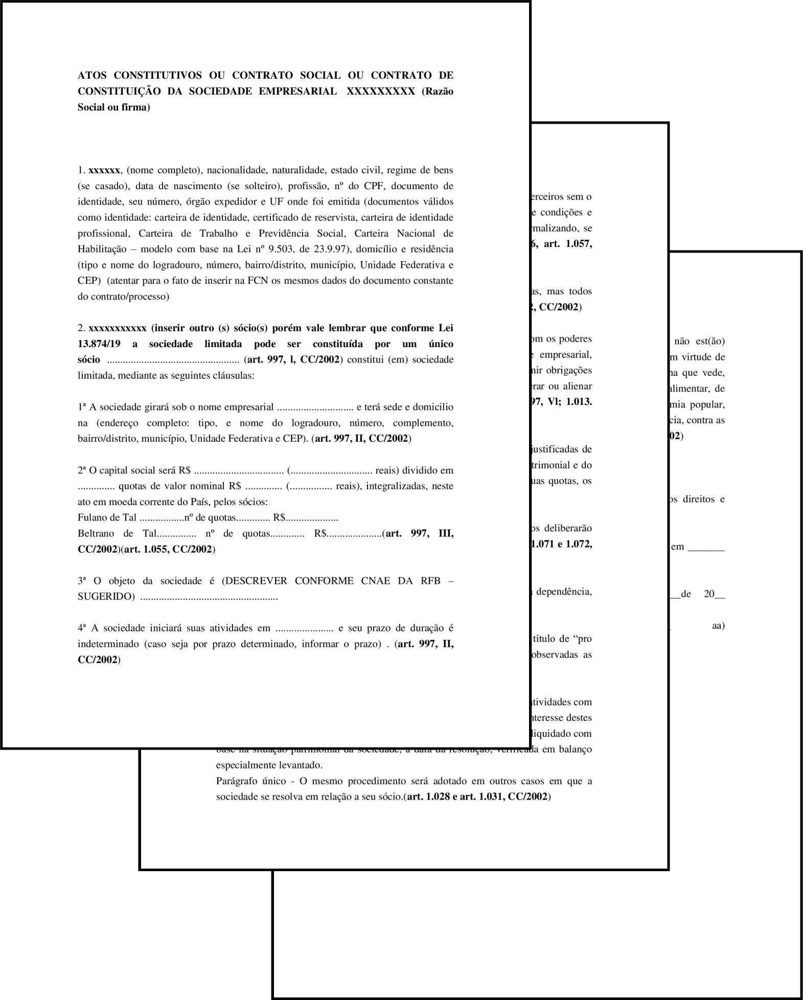

O Contrato Social das Sociedades Empresárias (SS, LTDA e SA) possuem uma maior quantidade de cláusulas, visto que no mesmo estarão listadas uma maior quantidade de pessoas.
Após preenchidos os contratos devem ser registrados - em cartório, no caso das SS, e nas juntas comercias, no caso das LTDA e SA - e, em alguns casos, devem possuir a assinatura de um advogado (exceto se a empresa for ME ou EPP).
PDF - Modelo de Contrato Social para Sociedade Simples Pura e Limitada
SS e LTDA - Modelo de Contrato Social para Sociedade Simples e Limitada
SS - Modelo de Contrato Social para Sociedade Simples Pura
Os modelos acima apresentados podem ser adaptados e modificados para se adequarem ao enquadramento SS ou LTDA.
Abaixo segue para estudo e modificação o Contrato Social da TravelGO, agência de viagens fictícia utilizada para apresentar o projeto aos alunos:
PDF - Contrato Social TravelGO
DOCX - Contrato Social TravelGO
De modo geral, o Contrato destas empresas possui as seguintes cláusulas:

O Ato Constitutivo mostrado acima possui 14 cláusulas que regem o funcionamento da empresa. Antes de serem descritas, é necessário informar os dados de todos os sócios da empresa.
Cláusula 1ª: delimita o nome empresarial (firma ou denominação) e endereço da sede da empresa;
Cláusula 2ª: define como o capital social foi integralizado e dividido entre os sócios;
Cláusula 3ª: define o objeto social da empresa;
Cláusula 4ª: define a data de abertura da empresa. Esta cláusla também está presente no Contrato Social das SS, SA e LTDA;
Cláusula 5ª e 6ª: cláusula especial que define as responsabilidades imitadas de cada sócio, mediante a suas quotas do Capital Social;
Cláusula 7ª: determina a quem caberá a administração da empresa, podendo ser adicionados parceiros não-titulares ou funcionários de alto escalão, como gerentes e administradores. Estes funcionários, junto aos sócios da empresa, possuem poderes de representar a empresa judicial e extrajudicialmente.
Cláusula 8ª e 9ª: determina que a empresa deverá produzir regularmente balanços patrimoniais para verificação e acompanhamento de suas atividades. Tais levantamentos são feitos, por padrão, anualmente, em datas escolhidas pela própria empresa.
Cláusula 10ª: define que a empresa tem o poder de abrir e fechar filiais conforme suas necessidades;
Cláusula 11ª: cláusula especial que assegura os sócios a fazerem retiradas mensais em espécie;
Cláusula 12ª: define como a sociedade deverá agir em caso de falecimento ou interdição por parte de algum sócio;
Cláusula 13ª: nesta cláusula todos os sócios garantem não estar impedidos judicalmente ou legalmente a abrir uma empresa.
Cláusula 14ª: elege-se um foro (tribunal municipal para assembleias e julgamentos jurídicos e legais) de referência para se regular demais pendências legais relativas à empresa.